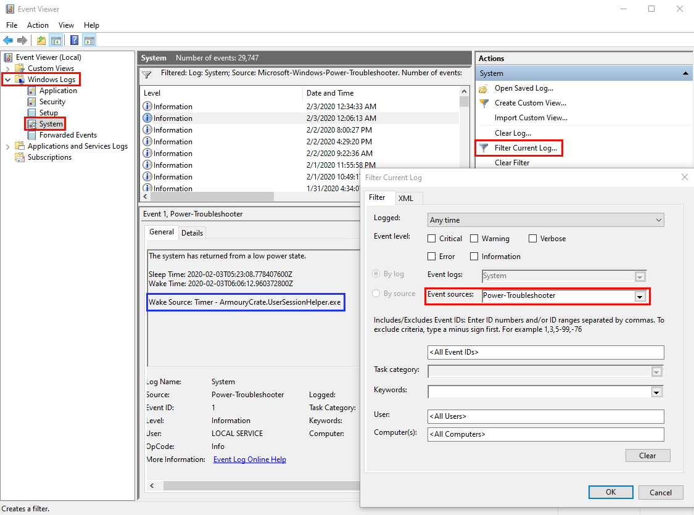
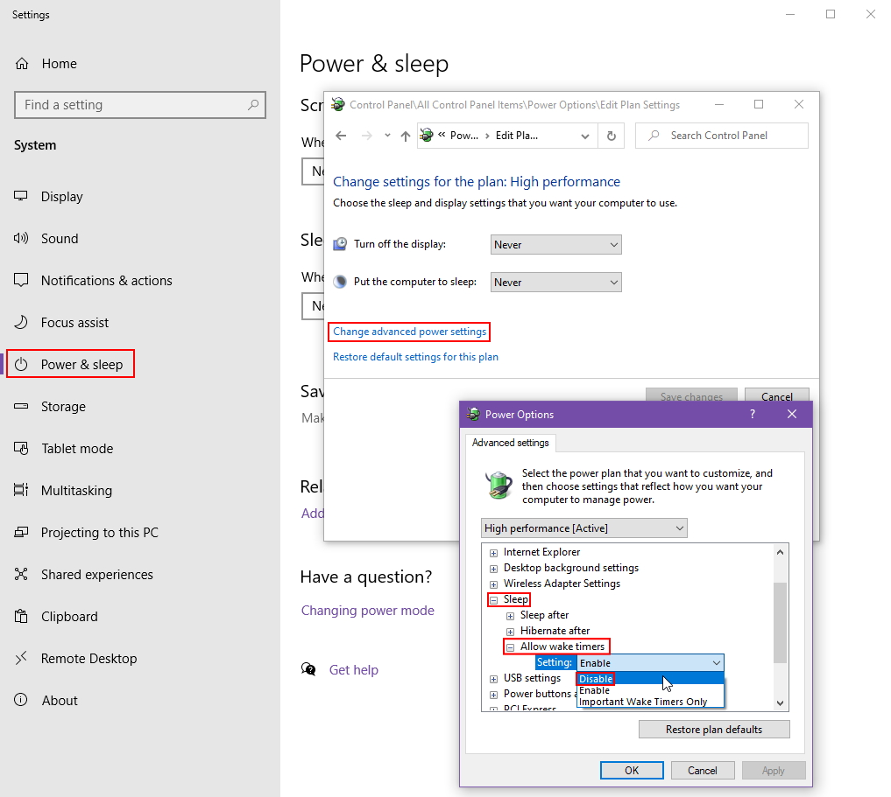

Armoury Crate Waking Windows from Sleep
Table of Contents
Background
On Black Friday, I got a new Ryzen 7 2700X with the fancy included RGB cooler, and an Asus motherboard that had Aura Sync. “Cool”, I thought, “I can have synced RGB lighting”. While the control software provided on the Aura Sync page would completely refuse to launch for me once it was installed, I was able to get the “Armoury Crate” Microsoft Store app to work and control the RGB. I was happy (or so I thought).
Problem
Lately, my computer has been waking itself up from Sleep mode in the middle of the night. Getting increasingly frustrated by this, I decided to investigate.
The simplest way to find the culprit is to run the following command after the computer has woken itself up:
powercfg -lastwakeThis shows what woke up the current Windows session. If the current Windows session was started from a cold boot or restart, it simply returns blank info.
The other way (and only way to view wake history) is to open Event Viewer, go to “Windows Logs” -> “System”, and filter by “Power-Troubleshooter”. From there, you can just click through the events to see which scheduled tasks or executables last woke your computer.

As you can see in the screenshot, the culprit was ArmouryCrate.UserSessionHelper.exe.
Fix
To fix this, you need to disable wake timers in your power settings. This is buried deep in the legacy power plan settings in Control Panel. Within the Settings app, go to “Power & sleep” -> “Changing power mode” -> “Change plan settings” -> “Change advanced power settings” -> “Sleep” -> “Allow wake timers” and set it to “Disable”.
